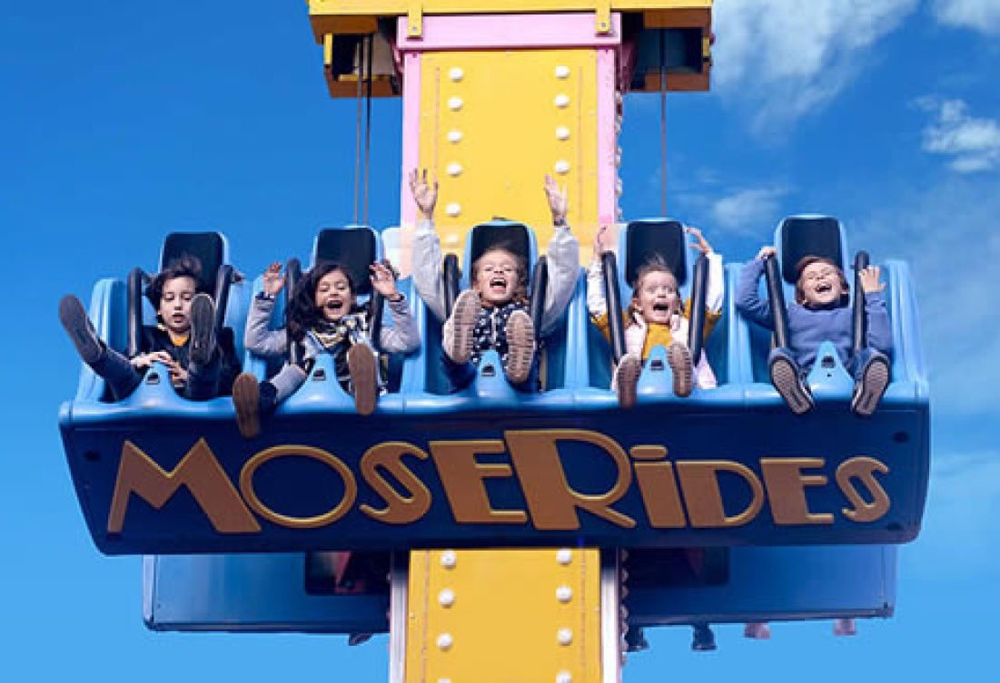
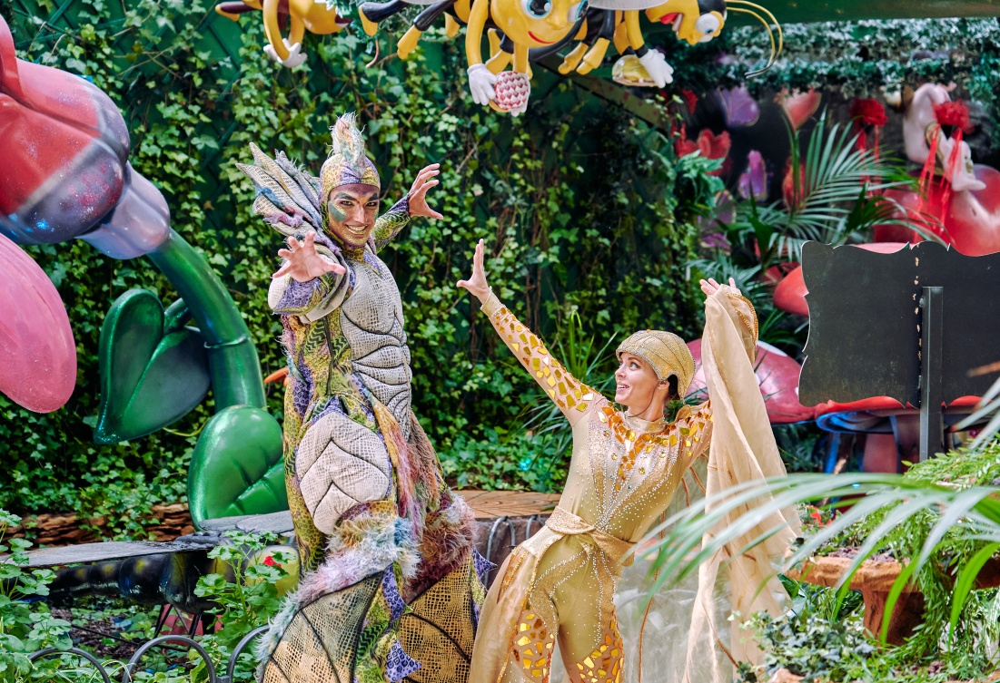
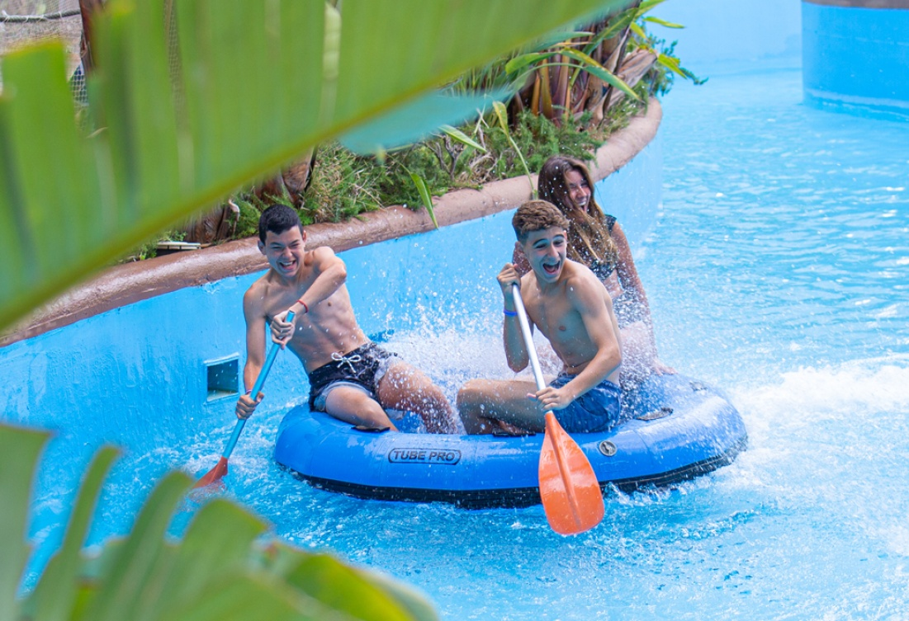
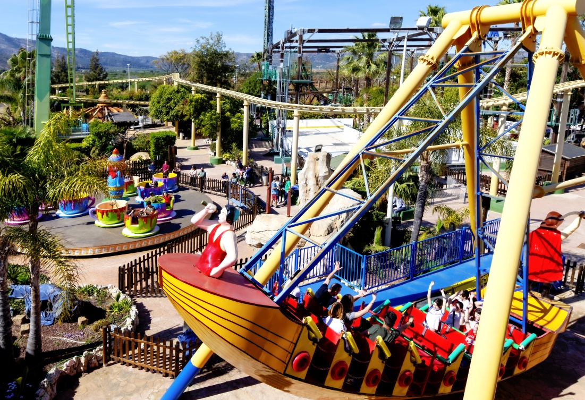

| Actividades | Información |
|---|---|
Parque Mundo Fantasía |
¡Bienvenidos al Parque de Atracciones Mundo Fantasía! Nuestro parque está diseñado específicamente para ofrecer diversión y entretenimiento a los más pequeños de la casa. Aquí encontrarás una amplia variedad de atracciones emocionantes que harán las delicias de toda la familia. Descrubre nuestras atracciones como el cine 4D con butacas interactivas, la pista de karts, hinchables, circuito de troncos, camas elásticas... y el carrousel veneciano que transportará a los niños a un mundo mágico.¡Descárgate la App de Marina dor y lleva toda la información contigo! |
| Precio adulto: 39.99$ ---------------------- Precio infantil: 19.99$Para más información click aquí |
|
Jardín encantado |
En este mágico jardín, los árboles parlanchines susurran secretos ancestrales, las hadas danzan entre las flores, los gnomos juegan escondite y los faunos llenan el aire con su música. Las fuentes y cascadas crean un ambiente relajante, mientras que las coloridas flores embriagan los sentidos. COLORETE, la nueva mascota de Marina d'Or, se une al equipo artístico para hacer de este espectáculo una experiencia inolvidable, llena de alegría y diversión para toda la familia. ¡No te pierdas la oportunidad de adentrarte en este mundo de fantasía y maravilla! |
| Precio adulto: 29.99$ ---------------------- Precio infantil: 13.99$Para más información click aquí |
|
Parque acuático |
¡Bienvenidos al emocionante Parque Acuático Polinesia! Sumérgete en la diversión y refrescate en nuestro increíble parque diseñado para ofrecerte una experiencia acuática inolvidable. Contamos con una amplia variedad de atracciones acuáticas para todas las edades. Desde emocionantes toboganes de agua hasta el río lento, hay algo para cada tipo de aventurero acuático. Descubre las piscinas de chapoteo para los más pequeños con juegos acuáticos, fuentes interactivas y toboganes diseñados especialmente para su diversión y seguridad. ¡Prepárate para mojarte, reír y crear recuerdos inolvidables en nuestro Parque Acuático! |
| Precio adulto: 39.99$ ---------------------- Precio infantil: 29.99$Para más información click aquí |
|
Parque aventuras |
¡Bienvenidos al Parque de atracciones Aventura d'Or! Aquí encontrarás una experiencia emocionante y llena de diversión diseñada especialmente para satisfacer los gustos y la energía de los adolescentes. Nuestro parque cuenta con una amplia selección de atracciones emocionantes que pondrán a prueba tus límites. Si eres amante de la velocidad y la adrenalina, no te lo puedes perder. Ven y únete a la diversión en nuestro parque. ¡Te esperamos para que vivas momentos inolvidables y emociones sin límites! |
| Precio adulto: 29.99$ ---------------------- Precio infantil: 19.99$Para más información click aquí |